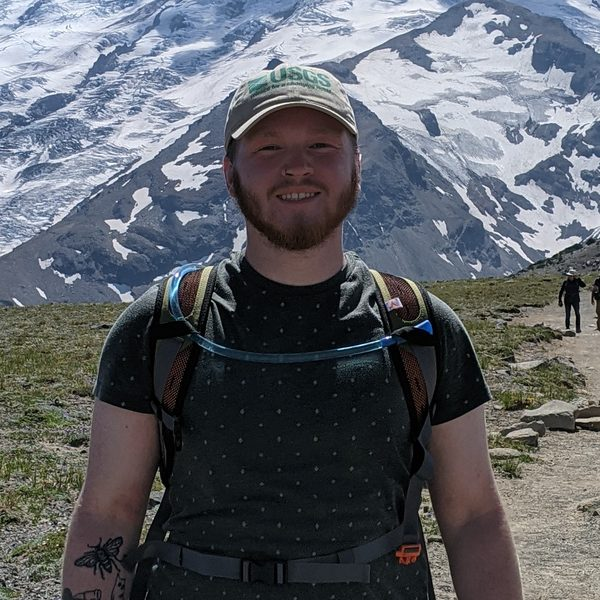
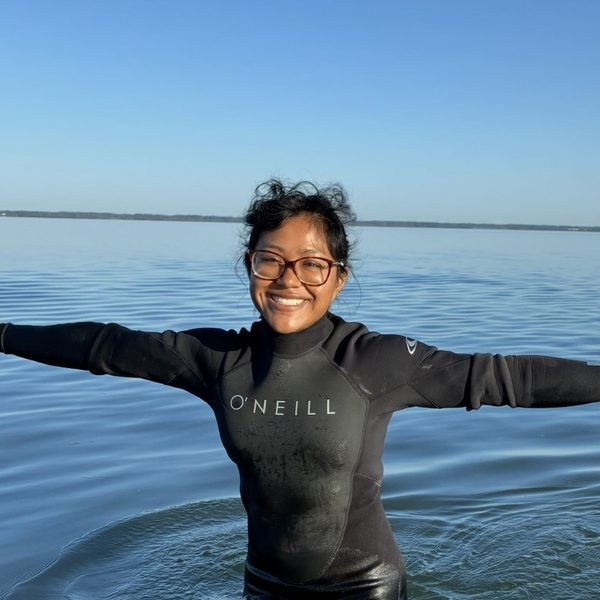
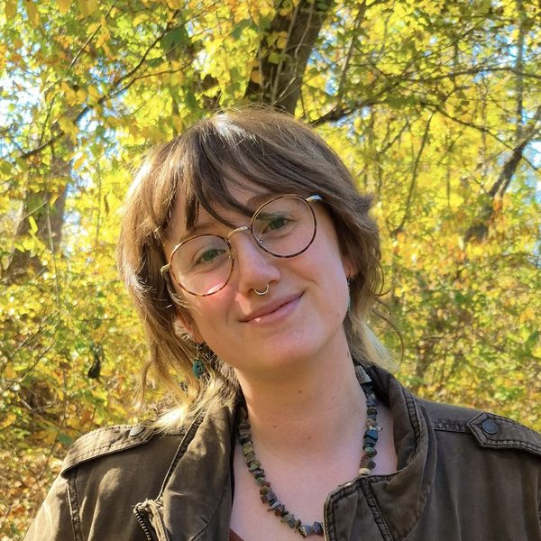
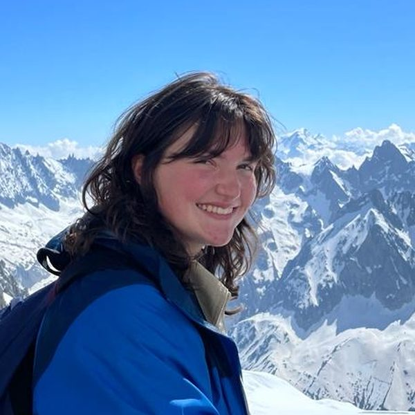
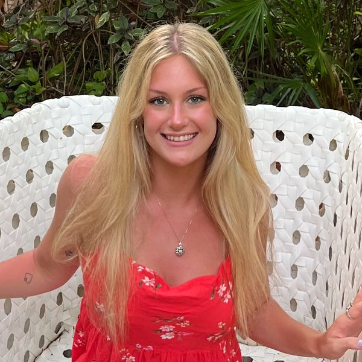
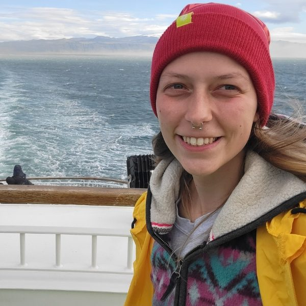
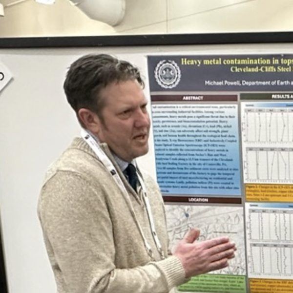

People
Principal Investigator

Graduate Students
Kelly Edmunds
Graduate Student
Kelly is a graduate student reconstructing the paleoclimate history of the Great Marsh in Exton, Pennsylvania. She describes the qualitative features of sediment cores from the marsh, then analyzes their carbon and nitrogen isotope values and C/N ratios using an isotope ratio mass spectrometer (IRMS) at Franklin & Marshall College. She compares the sediment core data to isotope values from the surrounding plant material to trace how the marsh formed and changed over time. She also studies how changes in these isotopes can indicate shifts in plant water-use efficiency.
Emily Mero
Master's Student
Emily is a graduate student researching the year-round atmospheric deposition of microplastics between an open-canopy site and a closed-canopy site. To do this, she deploys passive samplers and collects leaves to measure wet and dry deposition of microplastics which are analyzed on a biweekly schedule. Meteorological conditions such as precipitation, temperature, canopy coverage and wind gust are compared to see if these factors influence the rate of atmospheric microplastic deposition.

James Simpson
Master's Student
James is a graduate student researching microplastic enrichment in sediments throughout southeastern Pennsylvania. He is also an experienced organic geochemist who has isolated and extracted hundreds of samples for paleoclimate reconstructions at sites across the Neotropics.
Post-baccalaureate Researchers
Isabella Ashman
Post-baccalaureate Researcher
Ella worked in the Arnold Geochemistry Lab during her undergraduate career and continues her research into microplastic deposition as a post-baccalaureate. She was a co-author on a recently published paper in the journal Environmental Monitoring and Assessment where she helped model the environmental variables most strongly correlated with microplastic deposition in freshwater stream systems. She is currently analyzing microplastic morphology via SEM and characterizing particles using FTIR.
Undergraduates

Kate Frederick
Undergraduate
Kate is a senior Geoscience major at West Chester University studying human-environmental interactions at Cenote Xcach using a multi-proxy geochemical approach. She has prior research experience in projects ranging from geospace weather science, marsh outwelling, to Maya geoarcheology. Once she graduates, Kate seeks to pursue a career in paleoclimate or become an environmental lawyer, or a secret third option. Either way her goal is to help protect the environment while working to make STEM more equitable.

Parker Lane
Undergraduate
Parker is a senior Geology major at WCUPA with a research focus on paleoclimatology. Their current project uses core sediments from cenote Xcach in the northern Yucatan Peninsula to investigate Maya population dynamics throughout the Classic – Post-Classic periods. Methods of analysis include extraction of bulk and biomarker proxies for environmental and population change. After graduating from WCU, they hope to continue paleoclimate research in graduate school.
Dillon Letherer
Undergraduate
Dillon is a senior geoscience student interested in biosphere-atmosphere interactions and the drivers of precipitation regimes across periods of global climate change. Collaborating with fellow lab members, he analyzed hydrogen isotope ratios in leaf wax biomarkers from lacustrine sediment cores, extending the Central American paleo-precipitation record into MIS 11. Following graduation, Dillon hopes to pursue a PhD studying how terrestrial ecosystems respond to hydroclimatic change and increasing atmospheric aridity.
Alumni

Chloe Mattie
Undergraduate, 2023–2026
Kenny Sidhu
Undergraduate, 2023–2025

Lilah Rathman
Undergraduate, 2024–2025

Meagan Lipka
Undergraduate, 2023–2024
Sydney Costa
Undergraduate, 2022–2024

Michael Powell
Graduate Student, 2023–2025